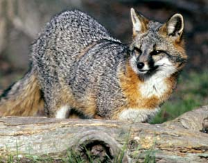
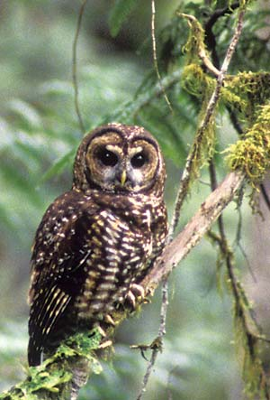
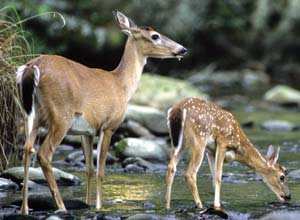
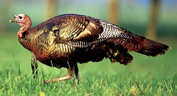
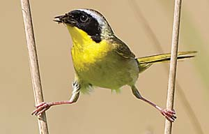
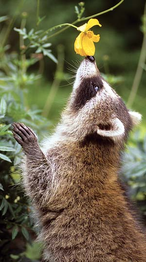

As was often my habit, I slipped out of bed at dawn and sloshed uphill through tall, dew-soaked grass to the old barbed-wire fence that separated the forested top half of our North Carolina mountainside from the sloping, pastured bottom. From that high vantage point I could see the entire valley spread out like a rumpled organic quilt - each irregular patch colored with rusty soil and green grass, and each patch with its own miniature house, barn and wandering livestock.
I was sitting amid the broom sedge, watching the light of day seep into the valley, when I sensed movement to my left. Just at the edge of my eyes’ capacity to strain in that direction, no more than 10 yards away and slightly behind, came a fox. I spotted it in time to see it take two or three steps before it spotted me.
For a moment, the fox froze. Then - to my astonishment - it turned toward the valley, glanced my way one more time and calmly sat down on its haunches.
Never mind that the fox is among the most persecuted and furtive of rural mammals. This one seemed not the least concerned over my presence. That it had chosen not to flee was a puzzle - but more than that, a privilege. This was no unhealthy creature too sick or addled to acknowledge danger. This fox had decided - for whatever reason - that I was no danger at all.
Afraid that motion might ruin the moment, I remained stock-still, facing straight ahead. But by straining my eye muscles almost to snapping, I could tell my companion was a gray fox- its reddish fur silver-tipped and its tail capped with black, not white like the red fox. Undoubtedly my visitor was checking me out, too, though with much less effort. While a person’s field of view is about 180 degrees, a fox can see nearly 250 degrees around.
So there we sat, the two of us on that hillside, gazing out across the misty fields.
Minutes later, just as my aching bones were telling me I would have to move something soon, the fox stood and walked out of my peripheral range. When I turned my head, it trotted into the woods and that was that. I was alone again, with only a distant rooster’s crow for company. But the memory stays with me still.
Encounters with wildlife are invariably magical and sometimes happen entirely by chance. But the more I thought about my meeting with the fox, the more I realized that mystic good fortune had played only a partial role. The truth was, without really knowing it, I had met the conditions that anyone can practice for successful wildlife watching.
Go to “edge” habitat. There’s no sense in looking for critters where critters aren’t. Animals in search of food quite sensibly favor places that provide both a diverse menu and access to protective cover. Those conditions are met in spades by edge areas, where one sort of habitat blends into another - along hedgerows, where woods open into pasture or where dryland vegetation merges into wetland. In such places, the greater variety of plants attracts a broader spectrum of animals and their predators. Edge areas are crossroads and, for wildlife watchers, windows into an entire food chain.
Go at the edge of day. Many animals conduct their lives at night, either by genetic disposition or by necessity to avoid contact with ever-encroaching humans. Large mammals spend the daylight hours bedded down in thick woods or brush; smaller creatures take shelter in their dens or nests. At dawn, though, many species are still on the move, feeding or traveling to sleeping areas.
So if you want to watch wildlife you have to be willing to rise and shine before the sun does. Or, you can wait for animal activity to pick up again in late afternoon or early evening. In summer, though, the heat of day often keeps critters bedded down until after dark.
Stay downwind. Nothing sends a creature scurrying like a whiff of eau de human. Keep the wind in your face when walking to an observation area and animals will be less likely to pick up your scent. My mountainside perch helped carry my telltale odor away from the fox behind me because, in hilly country, breezes tend to flow downslope in the morning and evening and upslope only during the heat of day.
Of course, no matter what the terrain, there’s always the possibility that the wind will shift suddenly. So it’s wise to minimize your scent as much as possible before heading to the woods. Skip the perfumes, aftershaves and scented deodorants. Use plain soap and shampoo. Wear clean, line-dried clothing. Some wildlife watchers store their outdoor clothing with a sachet of pine needles, cedar chips or some other pungent material native to their area.
Sit still. Although there are exceptions, many animals see mainly shades of gray, areas of dark or light, and have limited depth perception. When it comes to detecting movement, however, their vision is far superior to ours. If you want to observe animals unseen, you’re better off sitting still.
The trouble is, most humans find it difficult to remain motionless for more than a few seconds. I happened to be half asleep on the mountainside that morning, so sitting still came easy. Usually, I have to consciously settle down.
Doing so is a matter of practice. First, find a comfortable spot. Make a cushion of leaves, vegetation or a jacket and have a seat, facing the sighting area. With your arms and hands resting comfortably in your lap, relax your muscles and let your body go limp. Now focus entirely on your breathing: concentrate on the rhythm, the in and out of each easy, deep breath. Don’t let other thoughts distract you; keep your mind strictly on your breathing. Relaxing in this way for several minutes makes you less restless, more alert and better able to cope with doing “nothing.”
Use wide-angle, soft-focus vision. Well, actually I was staring blankly across the valley. But in so doing, I had unknowingly shifted to a wildlife-viewing technique I learned years ago at a workshop conducted by well-known animal tracker Tom Brown Jr. It’s a way to heighten your ability to detect movement - such as that of partially concealed birds or animals - in the landscape around you.
Try it the next time you’re outdoors. Instead of focusing on a single point or object, let your vision go soft and wide, all the way to the edges of your peripheral range. Don’t let your eyes zero in on anything. Just gaze at the entire landscape as a slightly fuzzy whole.
In time you’ll begin to perceive small movements. Focus on each flurry of motion long enough to identify it, then switch back to soft view to look for more. You’ll be surprised at the activity you hadn’t noticed using “normal” vision. This is an especially good way to locate birds flitting among bushes and treetops. (For more ways to sharpen your senses to better observe wildlife, see Get to Know Nature.)
Take advantage of cover and “casual camo.” Though their ability to perceive detail varies, all wild creatures recognize shapes. The human profile, in particular, has earned a nasty reputation. No matter how still or quiet you may be, the jig is up if an animal spots your infamous outline.
Most natural settings - whether grassy field or thick woodland - are a visual jumble, free of any real symmetry. The challenge is to blend in as much as possible. Fortunately, my seat on that mountainside amid tall weeds did the trick. The forest behind me provided a concealing backdrop, and the surrounding broom sedge served as a grassy blind. I’d have stood out like a sore thumb if I had been backlit by the sun or open sky, or if there had been no standing vegetation criss-crossing around me.
Plus, I was wearing “camo,” not military fatigues, but a muted brown-and-green plaid shirt. Any subtle pattern that breaks up your outline will help hide you. It’s best to choose colors that match the season: in fall and winter, wear browns and grays (or, in snow, white); wear greens, grays and blues in spring and summer. You also can buy commercial camo clothing, or make your own: Using fabric paints, draw grasslike green or brown streaks on old khaki pants, or tie-dye shirts in green, blue, brown and/or grey.
Avoid eye contact. That fox and I communicated in some subtle way, but we did not gaze straight-on at one another, and for good reason: The direct stare is the most commonly recognized aggressive gesture among animal species. Looking an animal square in the eyes is a sure way to send it running?-?away from you in most cases, but sometimes at you, especially with large mammals protecting their young. When you’re fortunate enough to get a close look at an animal, do your looking askance.
Go alone. I enjoy hiking with family and friends, but wildlife watching is a solitary endeavor by necessity. One clumsy human crashing through fields and woods makes enough commotion; two or more are simply too much. That fox never would’ve tolerated the presence of a second Homo sapiens. If you’re going wildlife watching, you’re better off going alone.
At the least, you’ll find something else rarely encountered in the civilized world. It’s called solitude. The woods are teeming with it.
|
 BILL LEA Gray fox |
 Michael Durham Northern spotted owl |
 Bill Lea Whitetail doe and fawn |
|
 Bill Lea Wild turkey |
 Richard Day/Daybreak Imagery Common yellowthroat |
 Dwight Kuhn Raccoon |